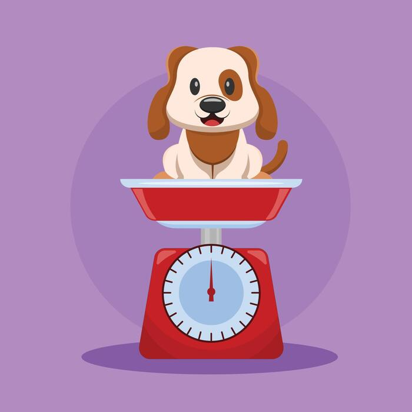
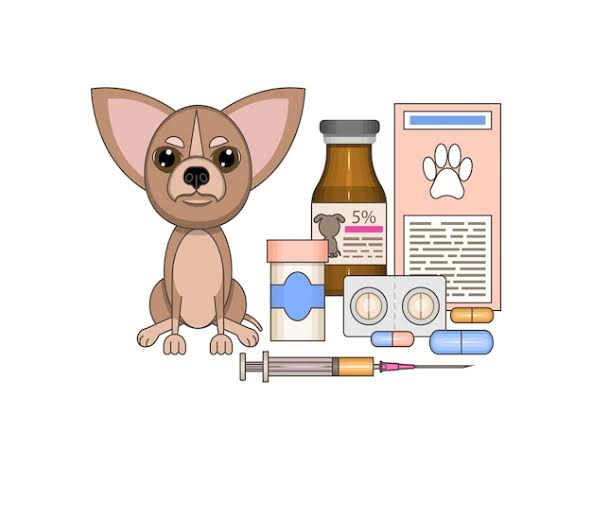

Consulta veterinaria
Atención médica para evaluar el estado de salud de tu mascota.
Desde $15.000
Agendar consultaEn Veterinaria San Marcos ofrecemos atención para cuidar la salud y el bienestar de tus mascotas.
Atención médica para evaluar el estado de salud de tu mascota.
Desde $15.000
Agendar consultaControl y aplicación de vacunas para prevenir enfermedades.
Desde $12.000
Agendar vacunación
Seguimiento del peso y estado nutricional de tu mascota.
Desde $8.000
Agendar control de pesoProcedimientos quirúrgicos menores realizados con cuidado y monitoreo profesional.
Desde $35.000
Agendar cirugía
Tratamientos internos y externos para ayudar a mantener a tu mascota libre de parásitos.
Desde $10.000
Agendar desparasitación